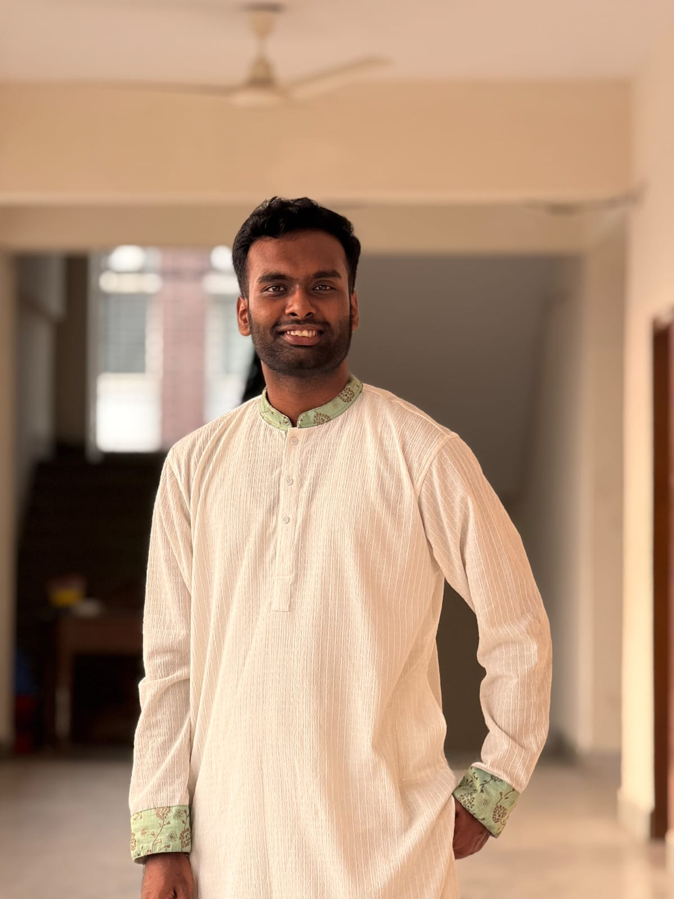

Kishor Alo
Writer, Event Management & Volunteer
2016 – PresentContributed to youth-focused writing, volunteering and event-management activities, supporting creative initiatives, community engagement and youth development.
HELLO, I'M
Undergraduate student at Bangladesh University of Professionals with a passion for technology, creativity, leadership, research and meaningful community engagement.

I’m an enthusiastic and multidisciplinary undergraduate student of Information and Communication Engineering at Bangladesh University of Professionals (BUP), with a strong interest in technology, creativity, leadership, and continuous learning.
My work spans web design, programming, research, teaching, writing, debating, and event management. I enjoy combining technical skills with creativity to solve problems, communicate ideas, and turn concepts into meaningful outcomes. Beyond technology, my involvement in debate, art, writing, and event management has strengthened my communication, leadership, teamwork, and organizational abilities.
I believe being multidisciplinary is not about doing everything, but about bringing different perspectives together to create something better. I’m always curious to learn, willing to take on new challenges, and motivated to grow through every experience.
Web Design, Programming & ICT
Event Management & Team Coordination
Research, Writing & Continuous Development
Art, Design & Arabic Calligraphy
Professional, leadership, teaching, volunteering and event-management experiences.
Contributed to youth-focused writing, volunteering and event-management activities, supporting creative initiatives, community engagement and youth development.
Actively involved in debating and club activities while contributing to event organization, coordination and overall club development.
Contributed to event management, coordination, logistics and on-ground execution as part of the organizing team.
Contributed to event planning, team coordination, management and successful on-ground execution across both editions.
Evaluated Biology and Bangla examination scripts with accuracy and consistency while maintaining academic assessment standards.
Taught ICT and helped students build a stronger understanding of important academic concepts through structured instruction and guidance.
Contributed to planning, coordination, team management and successful execution of the national debating event.
Supported stall operations, sales management and event coordination while working with the organizing team.
Contributed to event management, volunteering, coordination and participant engagement.
Supported event operations, coordination, crowd management and security-related activities.
Participated in competitive debating while contributing to club activities, organizational coordination and financial responsibilities.
Directed a Rubik’s Cube workshop and contributed to its planning, coordination, participant management and execution.
Worked with a charitable organization supporting underprivileged people while contributing to creative, social and community-oriented initiatives.
Contributed to charitable initiatives supporting underprivileged communities while taking part in creative and socially meaningful activities.
Contributed to organizing the national photography festival and helped create a platform for young creative talents.
Contributed to event coordination, management and smooth execution of the album launching concert.
Founded an online cultural festival and fundraising initiative to support people affected by the COVID-19 crisis.
My academic journey from secondary education to undergraduate study.
Information And Communication Engineering - ICE
2024 - PresentGroup - Science • GPA - 5.00
2022Group - Science • GPA - 5.00
2020Selected academic and technical projects.
A web application designed to track, manage and optimize restaurant waste through collection, segregation and recycling.
Clean, responsive and user-friendly web design.
Java, JavaScript, Python and programming fundamentals.
MySQL, SQL, database design and relational concepts.
Networking fundamentals, Cisco Packet Tracer and routing.
Planning, coordination, team management and execution.
Academic instruction, mentoring and student engagement.
Debate, presentations, communication and public speaking.
Writing, research, documentation and creative expression.
Awarded Talentpool Scholarship in PSC examination, Grade 5.
Awarded General Scholarship in JDC examination, Grade 8.
Successfully memorized the Holy Quran at an early age.
Completed the Aspire Leaders Program, a leadership and personal development program with Harvard-affiliated learning content.
Creativity is an important part of how I think, learn and express ideas.
Practicing and creating Arabic calligraphy as a form of artistic expression, patience and visual creativity.
Writing across different themes, combining creativity, observation and communication.
Exploring visual creativity and design alongside my technical interests.
Feel free to connect with me for professional opportunities, collaborations, projects or meaningful conversations.